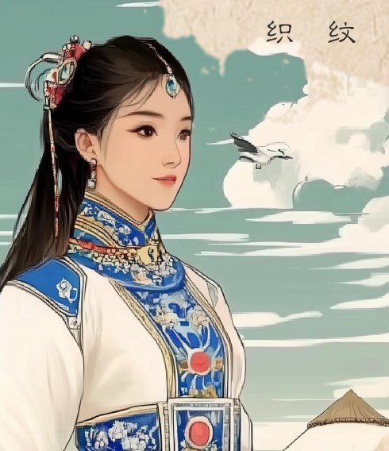

CULTURAL TECHNOLOGY / 2025—2026
纹启丝路
“纹启丝路”，是一个以内蒙古传统纹样为核心的数字人文与文化科技创新平台，致力于通过 AI 等先进技术，系统解码民族纹样所蕴含的文化基因，并将其转化为可感知、可交互、可传播的数字文化体验。
查看作品集项目页 ↗
INTERACTIVE POSTCARDS / 01—03
让纹样开口说话。
选择明信片，点击翻看正反面。右侧展示扫码后的手机页面，还可以播放对应的纹样故事。
01 / POSTCARD
普斯贺纹
几何纹样